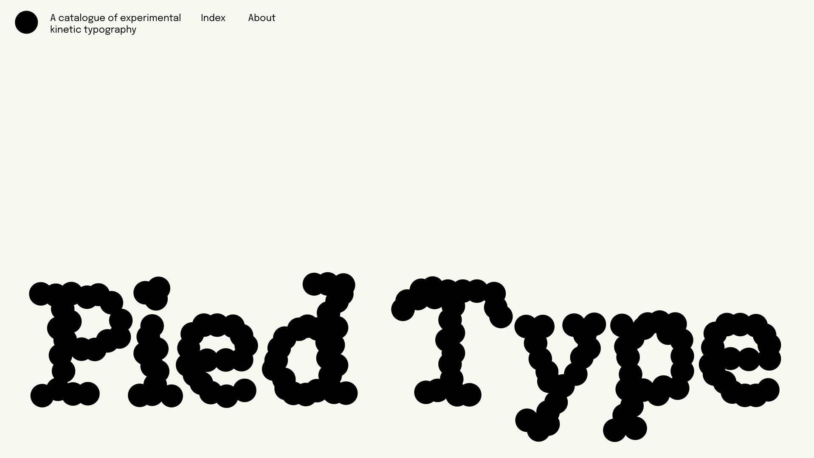
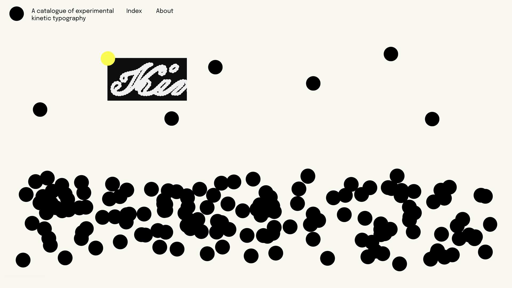
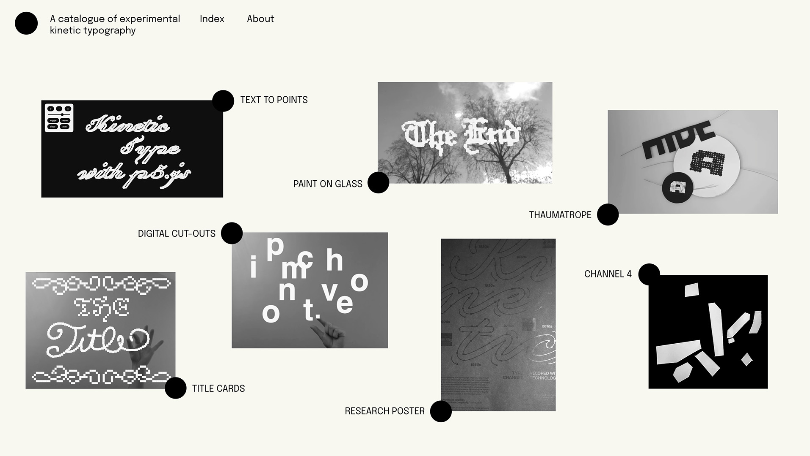
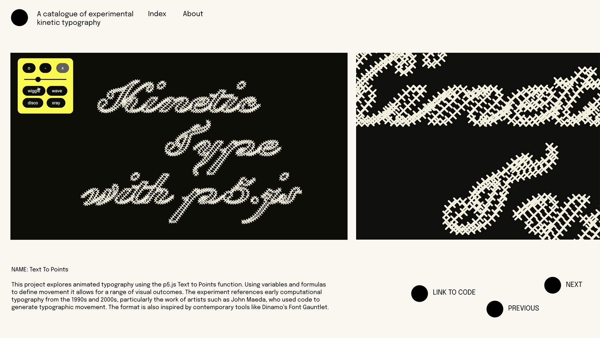
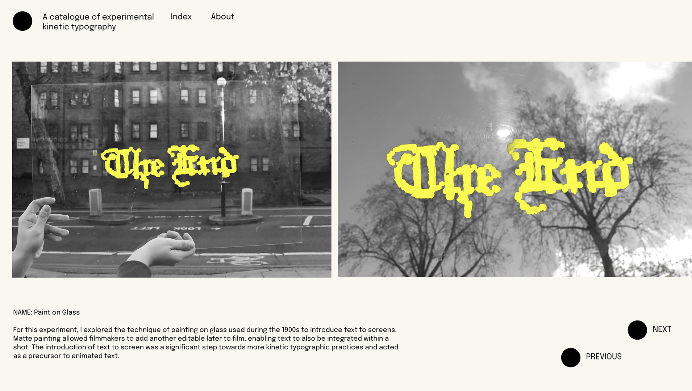

Amalia Popescu
About





Pied Type
(Website Archive)
Oct 25 - Feb 26
This project originated from my research exploring the development of kinetic typography. Throughout this, I experimented with different techniques of making typography move, to further understand the subject matter. This website catalogue is intended to house these typographic experiments and document the making aspect of my research process.
Visit website at piedtype.xyz
next project >